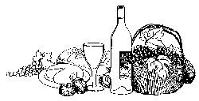
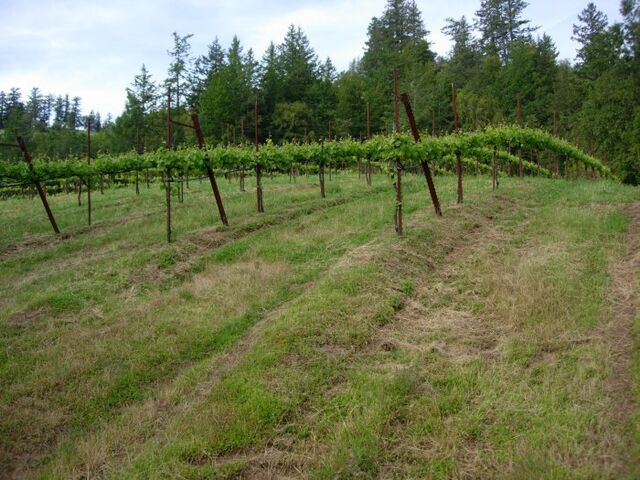

Our story
About Wild Hog Vineyard
A family winery at the headwaters of Wild Hog Creek, in the Fort Ross-Seaview appellation of the Sonoma Coast.
Wild Hog Vineyard is a small family owned and operated winery and vineyard in the hills between Cazadero and Fort Ross on the Sonoma Coast. The owners, Daniel and Marion Schoenfeld, have transformed the rugged mountain property into a beautiful lush garden resplendent with vineyard, orchard, vegetable beds, and fragrant flowers.
We have been making wine since 1977 and opened the winery in 1990. The wine making practices follow the traditional ways. The highest quality grapes are used, the wine is aged in small oak barrels, and the complete wine making process is carefully tended by hand from the moment the grapes arrive at the winery until they leave as bottled wine.
Wild Hog Vineyard believes that one of life's finest pleasures is sharing a delicious meal and fine wine with good friends. We at Wild Hog invite you to become part of that enjoyment.
The vineyard & the winery

Wild Hog Vineyard is at the headwaters of Wild Hog Creek (from which the winery derives its name) 45 minutes west of the small town of Cazadero. At 1400 feet elevation and 5 miles from the Ocean east of Fort Ross, the vineyard avoids most of the summer fog. The climate of the coastal range, in conjunction with our farming practices, helps to produce intense flavorful grapes.
The Wild Hog farm is approximately 115 acres that encompasses a large timber house and a 2500 square ft winery—both powered by solar and hydro electricity—a three acre family garden and fruit orchard, and 6 acres of certified organic grape vines. Hot days, cool nights, and large rainfall produce excellent growing conditions and transform the rugged hillside into lush gardens and delicious fruits.
We have been completely off the grid since purchasing the property in 1973. We believe we are the first winery in the United States to operate our facility completely off the grid.
We are dedicated to farming and gardening without the use of chemical additives, insecticides, or herbicides and have been certified organic by California Certified Organic Farmers since 1981. A permanent cover crop of clovers and grasses is grown between the rows to hold and feed the soil and provide an environment for beneficial insects. We hoe and weedeat under our vines. Due to the excellent health of the vines, we have no significant insect problems. A CCOF approved micronized wetable sulfur is used to control powdery mildew in the vineyard. Drip irrigation is used on young vines, but once established, they are dry farmed.
Wild Hog Vineyard farms 2 acres of Zinfandel grapes—with 10% Petite Syrah—which produces approximately 4 tons per acre and 3 acres of Pinot Noir which produces approximately 2 tons per acre. We also have one acre of Syrah, planted in 2000. The vines are vertically trellised with spacing varying from 8' by 12' to 7' by 9'. The Syrah is netted to keep out the birds and the entire vineyard is fenced for deer and hog protection.
We also have a very good dog who keeps the critters outside the fence.
Wild Hog Vineyard is proud to be one of the few wineries from this unique wine growing region—Fort Ross Seaview AVA—that is known for producing world class wines.
The wine & the winemaker
At Wild Hog Vineyard it is difficult to separate the wine from the winemaker. Daniel Schoenfeld began making wine as a home winemaker in 1977. He loved good food and wine and wanted to share his enjoyment with friends. He and Marion, his wife and co-owner, are both gardeners with a passionate belief in sustainable living. Marion tends a three acre organic garden and orchard which produces the vegetables and fruits that the family consumes. Daniel farms the six acre vineyard above the house.
As a winemaker, Daniel has a very simple view—allow the fruit to speak for itself. All Wild Hog wines are unfiltered allowing the full flavor to be extracted. The grapes are picked ripe and crushed (or de-stemmed) into open top fermentors, 1 to 4 ton size. Yeast is added and the must will ferment 10 to 21 days, until dry. The must is then pressed and the juice held in American oak barrels. After 18 months in the barrel the wine is bottled at the winery, using our own equipment. Since we do no filtering, the wine is racked two or three times during its time in the barrel. We are no longer purchasing grapes and from now on will only produce Estate Bottled wine. The winery produces approximately 800 cases per year, depending on harvest.
Estate bottled wines
After ten years of working towards having our own appellation, we finally got approval for the new Fort Ross-Seaview appellation, which reflects the special conditions of our region within the larger Sonoma Coast appellation.
Here is a map of the region: Fort Ross-Seaview AVA map (PDF, 7 MB)
Our Estate Pinot Noir, Syrah and Zinfandel are produced from our six acre vineyard. The grapes are organically grown and picked by hand.
We started planting our Zinfandel vineyard in 1982. This zin has about ten percent petite sirah (from our own vineyard) blended in to make it a big, full well balanced wine. As always the fruit is certified organic (C.C.O.F.) These grapes are grown on a ridge five miles from the ocean in the hills above Fort Ross. Our weather extremes always make this wine complex and fruit-driven.
Our Estate Zinfandel is what first brought wide attention to the wines produced at Wild Hog. Our 1992 won a gold medal and best of class at the 1994 Sonoma County Harvest Fair. The Zinfandel is big and jammy with complex flavors of pepper, spice, black raspberry, and dark cherry. It is also well balanced and thus food-friendly. Around 300 to 400 cases are produced annually.
The Estate Pinot Noir has a characteristic cherry-berry fruitiness with intense flavors and a big structure. Production of this Pinot Noir is limited, with 300 to 400 cases produced in an average year.
The Estate Syrah—depending on the weather that year—may be delicate or full bodied. We produce about 100 cases a year.
Pricing & ordering
For pricing and ordering information, please contact Daniel or Marion Schoenfeld at info@wildhogvineyard.com or (707) 847-3687.